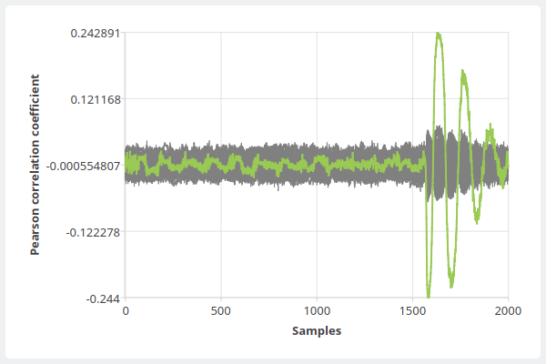

SICAK: SIde-Channel Analysis toolKit 1.1
User's Guide
Contents
- Introduction
- meas (Usage, Oscilloscope configuration, Character device configuration, Examples)
- prep (Usage, Examples)
- stan (Usage, Examples)
- correv (Usage, Examples)
- visu (Usage, Examples)
- chardevice (meas) plug-ins (serialport, smartcard)
- oscilloscope (meas) plug-ins (keysight3000, ps6000)
- measurement (meas) plug-ins (random128co, ttest128co, random128apdu, ttest128apdu)
- blockprocess (prep) plug-ins (predictaes128back, predictaes128front)
- tracesprocess (prep) plug-ins
- cpaengine (stan) plug-ins (cpa, oclcpa)
- ttestengine (stan) plug-ins (ttest)
- cpacorreval (correv) plug-ins (maxabscoef, maxcoef, maxedge, mincoef)
- cpakeyeval (correv) plug-ins (aes128back, plainchar)
- Tips
- License
- Contact
1. Introduction
Sicak is a side-channel analysis toolkit, consisting of following text-based utilities:
- meas: Measurement utility, useful e.g. for controlling a cryptographic device and oscilloscope
- prep: Pre-processing utility, useful e.g. for pre-processing power traces or e.g. for creating power predictions based on plain-/cipher-text
- stan: Statistical utility, useful e.g. for correlation-based (CPA) attacks or t-tests
- correv: Correlation Evaluation utility, useful for algorithmic evaluation of the CPA attack
- visu: Visualisation utility, useful e.g. for plotting power/correlation traces or t-values
These utilities are moreless interfaces for different types of plug-in modules:
- meas
- chardevice: Character device plug-in, useful e.g. for communication over serial port
- oscilloscope plug-in, useful for setting-up oscilloscope channels, trigger, timing, for running the oscilloscope and downloading the sampled power traces
- measurement scenario plug-in, which receives instances of chardevice and oscilloscope modules and performs the measurement itself
- prep
- blockprocess: Block data processing plug-in, useful e.g. for creating the power predictions when performing the CPA attack
- tracesprocess: Power traces processing plug-in, useful e.g. for pre-processing the power traces when performing higher-order statistics
- stan
- cpaengine: CPA computation engine plug-in (plug-in API supports arbitrary order analysis)
- ttestengine: t-test computation engine plug-in
- correv
- cpacorreval: CPA matrix evaluation plug-in, e.g. for searching maximum coefficients in a set of matrices
- cpakeyeval: CPA keyguess evaluation plug-in, which takes the result of cpacorreval, i.e. array of key candidates (e.g. based on maximums), and turns it into a cipher key; e.g. reversing last round key to the cipher key
Following sections document usage of the utilities and currently available plug-in modules.
back to top ↑2. meas
meas is a measurement utility. It runs a measurement scenario module, which may produce different output files.
The Measurement scenario gets an Oscilloscope and Character Device instances, if they are set. Most of the measurement scenarios is expected to require both modules to be set. Both oscilloscope and character device need to be initialized (appropriate device id must be set), and may be configured (if configuration file is set).
back to top ↑Usage
Brief usage is also printed when the program is run with -h option.
./meas [options] config
Options
-I, --id {string}
The ID string will be used in output files' filenames. Default value is current datetime.
-Q, --query
Query available traces and block data preprocessing plug-in modules (-M, -O, -C).
-M, --measurement-module {string}
ID of measurement scenario plug-in module to use.
-O, --oscilloscope-module {string}
ID of oscilloscope plug-in module to use.
-R, --oscilloscope-device {string}
ID of oscilloscope device to use.
-S, --oscilloscope-config {filepath}
Oscilloscope JSON configuration file.
See below for config file format.
-C, --chardevice-module {string}
ID of character device plug-in module to use.
-D, --chardevice-device {string}
ID of character device to use.
-E, --chardevice-config {filepath}
Character device JSON configuration file.
See below for config file format.
-n, --measurements {positive integer}
Number of measurements to make.
--param {param}
Optional measurement plug-in module parameters. Module specific option.
-h, --help
Displays help.
-v, --version
Displays version information.
Arguments
config
JSON configuration file(s) with Options.
The JSON configuration file may contain key:string pairs, where key is a long option name and string is the value.
For example: { "id":"myMeasurement" }
back to top ↑Oscilloscope configuration file
The utility expects a JSON config file.
Format
JSON document may contain following objects, with following key:vals.
When an object is defined (e.g. "channel1"), all it's settings must be set.
- channelN: settings for channel N (N>=1)
- enabled: {true|false}
- coupling: {"AC"|"DC"}
- impedance: {"50"|"1M"}
- rangemV: {integer} (e.g. 1000 sets the oscilloscopes range to -1V..+1V)
- offsetmV: {integer} (i.e. voltage that is added to the channel before sampling}
- bwLimit: {"FULL"|"25MHz"|"20MHz"}
- trigger: trigger settings
- enabled: {true|false}
- channel: {positive integer}
- level: {float} (e.g. with range is -1V..1V and no offset: level 0 is -1V, level 0.5 is 0V, level 0.75 is 0.5V)
- slope: {"rising"|"falling"|"either"}
- timing: timebase and sampling settings
- preTriggerRange: {float} (time range in seconds)
- postTriggerRange: {float} (time range in seconds)
- samples: {positive integer} (this is a soft value: oscilloscope driver has final word)
- captures: {positive integer} (number of captures to catch per one oscilloscope run; some oscilloscopes only support one capture per run)
Example of a JSON config file
{
"channel1": {
"enabled": true,
"coupling": "DC",
"impedance": "50",
"rangemV": 50,
"offsetmV": 0,
"bwLimit": "25MHz"
},
"channel2": {
"enabled": false,
"coupling": "DC",
"impedance": "1M",
"rangemV": 50,
"offsetmV": 0,
"bwLimit": "FULL"
},
"channel3": {
"enabled": true,
"coupling": "DC",
"impedance": "1M",
"rangemV": 1000,
"offsetmV": 0,
"bwLimit": "FULL"
},
"channel4": {
"enabled": false,
"coupling": "DC",
"impedance": "1M",
"rangemV": 50,
"offsetmV": 0,
"bwLimit": "FULL"
},
"trigger": {
"enabled":true,
"channel": 3,
"level": 0.7,
"slope": "rising"
},
"timing": {
"preTriggerRange": 0.0,
"postTriggerRange": 3.2e-6,
"samples": 2000,
"captures": 1
}
}
back to top ↑
Character device configuration file
The utility expects a JSON config file.
These are the values that may be set. Not all the Character Device modules have to consider them. Read module documentation to find out more.
Format
JSON document may contain following key:vals.
- baudrate: {positive integer} (the baudrate value must be supported by the selected module)
- parity: {0|1|2} (0=none, 1=odd, 2=even)
- stopbits: {1|2}
- timeoutms: {positive integer} (timeout of the device in ms, default is 5000)
Example of a JSON config file
{
"baudrate": 115200,
"parity": 0,
"stopbits": 1
}
back to top ↑
Examples
Query available plug-ins
$ ./meas -Q
Found following measurement scenario plug-ins:
* Plug-in ID: 'random128co', name: 'AES-128 random (command oriented)'
Description: 'Sends 0x01 followed by cipher key, then N times {0x02 followed by 128 bits of random data}, receives back every cipher text, and captures the power consumption.'
* Plug-in ID: 'ttest128co', name: 'AES-128 t-test (command oriented)'
Description: 'Sends 0x01 followed by cipher key, then N times {0x02 followed by 128 bits of either random or constant data}, receives back every cipher text, and captures the power consumption'
Found following oscilloscope plug-ins:
* Plug-in ID: 'keysight3000', name: 'Keysight 3000 series oscilloscope (formerly Agilent)'
* Device ID: 'FILEPATH', where FILEPATH is path to a usbtmc device, e.g. "/dev/usbtmc0"
Make sure you have permissions to access the file, and the usbtmc module loaded.
* Plug-in ID: 'ps6000', name: 'PicoScope 6000 series oscilloscope'
* Device ID: 'SERIALNO', where SERIALNO is a serial number of the oscilloscope. Leave empty to let driver automatically select first device found.
On Linux, make sure you have permissions to access the device (/dev/usb/...).
Found following character device plug-ins:
* Plug-in ID: 'serialport', name: 'Win32/POSIX Serial Port'
* Device ID: 'FILEPATH', where FILEPATH is path to a terminal device, e.g. "/dev/ttyUSB0"
Launch measurement
This command launches the ttest128co measurement scenario using ps6000 oscilloscope and serialport chardevice modules.
$ ./meas -I id -M ttest128co -O keysight3000 -R /dev/usbtmc0 -S ./conf.json -C serialport -D /dev/ttyUSB0 -E ./conf.json -n 1000
SICAK MEASurements 1.0
* 20.12.2018 18:25:01 Starting...
* Measurement scenario module loaded: 'AES-128 t-test (command oriented)'
* Oscilloscope module loaded: 'Keysight 3000 series oscilloscope (formerly Agilent)'
* Oscilloscope successfully opened: '/dev/usbtmc0'
* Oscilloscope configuration file found: './conf.json'
* Requesting oscilloscope channel settings:
* Channel: '1'
* Enabled: 'true'
* Coupling: 'DC'
* Impedance: '50'
* Range: -+'50mV'
* Offset: '0mV'
* Bandwidth Limit: '25MHz'
* Real oscilloscope channel settings (after setup):
* Channel: '1'
* Enabled: 'true'
* Coupling: 'DC'
* Impedance: '50'
* Range: -+'50mV'
* Offset: '0mV'
* Bandwidth Limit: '25MHz'
* Requesting oscilloscope channel settings:
* Channel: '3'
* Enabled: 'true'
* Coupling: 'DC'
* Impedance: '1M'
* Range: -+'1000mV'
* Offset: '0mV'
* Bandwidth Limit: 'FULL'
* Real oscilloscope channel settings (after setup):
* Channel: '3'
* Enabled: 'true'
* Coupling: 'DC'
* Impedance: '1M'
* Range: -+'1000mV'
* Offset: '0mV'
* Bandwidth Limit: 'FULL'
* Requesting oscilloscope trigger settings:
* Enabled: 'true'
* Source channel: '3'
* Trigger level: '0.7' for channel range 0..1
* Edge slope: 'either'
* Real oscilloscope trigger settings (after setup):
* Enabled: 'true'
* Source channel: '3'
* Trigger level: '0.7' for channel range 0..1
* Edge slope: 'either'
* Requesting oscilloscope timing settings:
* Pre-trigger time range: '0s'
* Post-trigger time range: '3.2e-06s'
* Samples: '2000'
* Captures per run: '100'
* Real oscilloscope timing settings (after setup):
* Pre-trigger time range: '0s'
* Post-trigger time range: '3.2e-06s'
* Samples: '30000'
* Captures per run: '1'
* Character device module loaded: 'Win32/POSIX Serial Port'
* Character device configuration file found: ./conf.json
* Character device successfully opened: '/dev/ttyUSB0'
* Using following settings:
* Baudrate: '115200'
* Parity: 'no parity'
* Stop bits: 'one'
* Character device timeout set: '5000ms'
* Launching 1000 measurements...
0% done... remaining time not yet available
conf.json: (input)
{
"channel1": {
"enabled": true,
"coupling": "DC",
"impedance": "50",
"rangemV": 50,
"offsetmV": 0,
"bwLimit": "25MHz"
},
"channel3": {
"enabled": true,
"coupling": "DC",
"impedance": "1M",
"rangemV": 1000,
"offsetmV": 0,
"bwLimit": "FULL"
},
"trigger": {
"enabled":true,
"channel": 3,
"level": 0.7,
"slope": "either"
},
"timing": {
"preTriggerRange": 0.0,
"postTriggerRange": 3.2e-6,
"samples": 2000,
"captures": 100
},
"baudrate": 115200,
"parity": 0,
"stopbits": 1
}
id.json: (output)
{
"blocks-count": "643",
"blocks-length": "16",
"constant-traces": "constant-traces-id.bin",
"constant-traces-count": "357",
"random-traces": "random-traces-id.bin",
"random-traces-count": "643",
"samples-per-trace": "2000"
}
back to top ↑
3. prep
prep is a data preprocessing utility.
It loads either blocks of (char) data and processes them using Block Preprocessing Module, or it loads power traces containing (int16_t) samples and processes them using Traces Preprocessing Module.
back to top ↑Usage
Brief usage is also printed when the program is run with -h option.
./prep [options] config
Options
-I, --id {string}
The ID string will be used in output files' filenames. Default value is current datetime.
-Q, --query
Query available traces and block data preprocessing plug-in modules (-T, -B).
-T, --traces-preprocess-module {string}
ID of traces preprocessing plug-in module to use. Select either -T or -B.
-B, --block-preprocess-module {string}
ID of block data preprocessing plug-in module to use. Select either -T or -B.
-t, --traces {filepath}
File containing -n traces, each of which containing -s samples (int16).
-n, --traces-count {positive integer}
Number of power traces in -t file.
-s, --samples-per-trace {positive integer}
Number of samples per trace.
-b, --blocks {filepath}
File containing -m blocks of data, each of which -k bytes long.
-m, --blocks-count {positive integer}
Number of blocks of data in -b file.
-k, --blocks-length {positive integer}
Length of data block in -b file, in bytes.
--param {param}
Optional plug-in module parameters. Module specific option.
-h, --help
Displays help.
-v, --version
Displays version information.
Arguments
config
JSON configuration file(s) with Options.
The JSON configuration file may contain key:string pairs, where key is a long option name and string is the value.
For example: { "blocks-length":"16" }
back to top ↑Examples
Query available plug-ins
$ ./prep -Q
Found following traces preprocessing plug-ins:
* No traces preprocessing plug-in found!
Found following block data preprocessing plug-ins:
* Plug-in ID: 'predictaes128back', name: 'Create AES-128 byte power predictions using last round working register Hamming distance'
* Plug-in ID: 'predictaes128front', name: 'Create AES-128 byte power predictions using first round S-Box Hamming weight'
Create power predictions for CPA attack on AES-128 first round S-box
$ ./prep -B predictaes128front -b ciphertext-id.bin -m 100000 -k 16 -I id
SICAK PREProcessing 1.0
Preprocessing block data...
100% done... 3s elapsed.
Created 16 power prediction sets, each containing 256 power predictions for each of 100000 data blocks,
and saved to 'aes128front-id.16prd'.
id.json: (output)
{
"prediction-candidates-count": "256",
"prediction-sets-count": "16",
"predictions": "aes128front-id.16prd",
"random-traces-count": "100000"
}
back to top ↑
4. stan
stan is a statistical processing utility.
The utility loads one of the two different types of plug-in modules (CPA, t-test) and runs one of the tasks:
- CPA
- create: Creates a file with new contexts, based on power traces and power prediction sets.
- merge: Merges two files with existing non-empty contexts.
- finalize: Creates a file with correlation matrices, based on a context.
- t-test
- create: Creates a file with new contexts, based on random data power traces and constant data power traces.
- merge: Merges two files with existing non-empty contexts.
- finalize: Creates a file with t-values and degrees of freedom, based on a context.
It loads either CPA module or t-test module. Then it runs one of the functions (create, merge, finalize) on a specified computational device.
back to top ↑Usage
Brief usage is also printed when the program is run with -h option.
./stan [options] config
Options
-I, --id {string}
The ID string will be used in output files' filenames. Default value is current datetime.
-Q, --query
Query available CPA and t-test plug-in modules (-C, -T), platforms (-P) and devices (-D).
-C, --cpa-module {string}
ID of a CPA plug-in module to launch. Select either -C or -T.
-T, --ttest-module {string}
ID of a t-test plug-in module to launch. Select either -C or -T.
-P, --platform {positive integer}
Platform from which to choose a device (-D). Default is 0.
-D, --device {positive integer}
Device from a platform (-P) to run computation on. Default is 0.
-F, --function {create|merge|finalize}
Select a function:
- 'create' a new context from traces/predictions
- 'merge' existing contexts A,B
- 'finalize' existing context A.
-r, --random-traces {filepath}
File containing -n random data traces, each of which containing -s samples (int16).
-n, --random-traces-count {positive integer}
Number of random data power traces in -r file.
-c, --constant-traces {filepath}
File containing -m constant data traces, each of which containing -s samples (int16).
-m, --constant-traces-count {positive integer}
Number of constant data power traces in -c file.
-s, --samples-per-trace {positive integer}
Number of samples per trace.
-p, --predictions {filepath}
File containing -q power prediction sets, each of which containing -k power predictions (uint8) for every random trace in -r file.
-q, --prediction-sets-count, --contexts-count {positive integer}
Number of power prediction sets/number of contexts. E.g. attacking AES-128 key, this value would be 16.
-k, --prediction-candidates-count {positive integer}
Number of power predictions for each power trace in -p file. E.g. attacking AES-128 key, this value would be 256.
-a, --context-a {filepath}
Context file A, for use in Finalize or Merge functions.
-b, --context-b {filepath}
Context file B, for use in Merge function.
--param {param}
Optional plug-in module parameters. Module specific option.
-h, --help
Displays help.
-v, --version
Displays version information.
Arguments
config
JSON configuration file(s) with Options.
The JSON configuration file may contain key:string pairs, where key is a long option name and string is the value.
For example: { "random-traces-count":"10000" }
Output
stan produces following files:
- cpa create: cpa-ID.Qctx
- cpa merge: cpa-ID-merged.Qctx
- cpa finalize: cpa-ID.Qcor
- ttest create: ttest-ID.ctx
- ttest merge: ttest-ID-merged.ctx
- ttest finalize: ttest-ID.tvals
- ID.json
where ID is stan given parameter or default, and Q is number of power prediction sets/contexts created (when Q=1, it's omitted).
.Qcor files contain Q correlation matrices, each SxK large, where Q is number of power prediction sets, S is number of samples per trace and K is number of key candidates.
.tvals file contain Sx2 matrix, where S is number of samples per trace, where in the first row there are t-values, in the second row there are degrees of freedom.
back to top ↑Examples
Query available plug-ins
$ ./stan -Q
Found following CPA plug-ins, platforms and devices:
* Plug-in ID: 'cpa', name: 'First Order Univariate CPA'
* Platform ID: '0', name: 'localcpu'
* Device ID: '0', name: 'localcpu'
* Plug-in ID: 'oclcpa', name: 'OpenCL accelerated First Order Univariate CPA'
* Platform ID: '0', name: 'Intel(R) OpenCL' (OpenCL 1.2 LINUX)
* Device ID: '0', name: 'Intel(R) Core(TM) i5-3230M CPU @ 2.60GHz'
Found following t-test plug-ins, platforms and devices:
* Plug-in ID: 'ttest', name: 'First Order Non-Specific Univariate Welch's t-test'
* Platform ID: '0', name: 'localcpu'
* Device ID: '0', name: 'localcpu'
Create Univariate First-Order CPA context
$ ./stan -I ug -C cpa -F create -r random-traces-id.bin -n 10000 -s 2000 -p aes128back-10k.16prd -q 16 -k 256
SICAK STatistical ANalysis 1.0
Creating new CPA contexts...
100% done... 1m, 19s elapsed.
Created 16 new CPA contexts using
* 10000 power traces with 2000 samples per trace, from 'random-traces-id.bin',
* 16 prediction sets containing 256 power predictions for each of these power traces, from 'aes128back-10k.16prd'
and saved to 'cpa-ug.16ctx'.
ug.json: (output)
{
"context-a": "cpa-ug.16ctx",
"contexts-count": "16",
"prediction-sets-count": "16"
}
Create correlation matrices from Univariate First-Order CPA contexts
$ ./stan -I ugc -C cpa -F finalize ug.json
SICAK STatistical ANalysis 1.0
Finalizing CPA context...
100% done... 1s elapsed.
Created 16 correlation matrices (2000x256) using
* 16 contexts based on 10000 from 'cpa-ug.16ctx'
and saved to 'cpa-ugc.16cor'.
ugc.json: (output)
{
"contexts-count": "16",
"correlations": "cpa-ugc.16cor",
"correlations-candidates-count": "256",
"correlations-sets-count": "16",
"prediction-candidates-count": "256",
"prediction-sets-count": "16",
"samples-per-trace": "2000"
}
back to top ↑
5. correv
correv is a correlation evaluation utility. It loads correlation matrices from a file and evaluates them using specified modules.
back to top ↑Usage
Brief usage is also printed when the program is run with -h option.
./correv [options] config
Options
-Q, --query
Query available CPA correlation matrix evaluation and keyguess evaluation plug-in modules (-E, -K).
-E, --correlations-eval-module {string}
ID of a CPA correlation matrix evaluation plug-in module to use.
-K, --keyguess-eval-module {string}
ID of a CPA keyguess evaluation plug-in module to use.
-c, --correlations {filepath}
File containing -q correlation matrices, each of which -s wide and -k tall (double).
-q, --prediction-sets-count, --contexts-count {positive integer}
Number of correlation matrices. E.g. attacking AES-128 key, this value would be 16.
-k, --prediction-candidates-count {positive integer}
Number of key candidates, i.e. rows of correlation matrix. E.g. attacking AES-128 key, this value would be 256.
-s, --samples-per-trace {positive integer}
Number of samples per trace, i.e. cols of correlation matrix.
--param {param}
Optional plug-in module parameters. Module specific option.
-h, --help
Displays help.
-v, --version
Displays version information.
Arguments
config
JSON configuration file(s) with Options.
The JSON configuration file may contain key:string pairs, where key is a long option name and string is the value.
For example: { "samples-per-trace":"2000" }
back to top ↑Examples
Query available plug-ins
$ ./correv -Q
Found following CPA correlation matrix evaluation plug-ins:
* Plug-in ID: 'maxabscoef', name: 'Maximum absolute value correlation coefficient'
* Plug-in ID: 'maxcoef', name: 'Maximum correlation coefficient'
* Plug-in ID: 'maxedge', name: 'Maximum correlation trace derivative (param="d;sigma", e.g. param="23;8.0")'
* Plug-in ID: 'mincoef', name: 'Minimum correlation coefficient'
Found following CPA keyguess evaluation plug-ins:
* Plug-in ID: 'aes128back', name: 'AES-128 last round CPA key evaluation: last round key gets reversed to the cipher key'
* Plug-in ID: 'plainchar', name: 'Simple key evaluation for byte-based CPA: no transformation after correlation evaluation (e.g. AES first round)'
Evaluate correlation matrices from previous stan example
$ ./correv -E maxcoef -K plainchar ugc.json
SICAK CORRelations EValuation 1.0
Evaluating CPA correlation matrices...
100% done... <1s elapsed.
Obtained key (hex): '36d024461d84b8375fc0f9c04cbab6bb'
$ ./correv -E maxcoef -K aes128back ugc.json
SICAK CORRelations EValuation 1.0
Evaluating CPA correlation matrices...
100% done... <1s elapsed.
Obtained key (hex): '00112233445566778899aabbccddeeff'
back to top ↑
6. visu
visu is a visualisation utility. It allows to plot power traces, correlation traces or t-values and show in graphical window or save in raster format (jpg, png) or vector format (svg).
back to top ↑Usage
Brief usage is also printed when the program is run with -h option.
./visu [options] config series
Options
-D, --display
Display the chart in a graphical window.
-S, --save {filename}
Save the chart to file.
The output image format is automatically selected by the filename extension (jpg, png, svg).
-W, --width {positive integer}
Width of the saved chart.
-H, --height {positive integer}
Height of the saved chart.
-T, --title {string}
Chart title
-t, --traces {filepath}
File containing -n traces, each of which containing -s samples (int16).
-n, --traces-count {positive integer}
Number of power traces in -t file.
-r, --traces-real-range {positive integer}
Maximum positive value of a power sample in mV, e.g. 2000 for range -2V to +2V.
-a, --t-values {filepath}
File containing -s t-test values (double).
-c, --correlations {filepath}
File containing -q correlation matrices, each of which -s wide and -k tall (double).
-q, --correlations-sets-count {positive integer}
Number of correlation matrices. E.g. attacking AES-128 key, this value would be 16.
-k, --correlations-candidates-count {positive integer}
Number of key candidates, i.e. rows of correlation matrix. E.g. attacking AES-128 key, this value would be 256.
-s, --samples-per-trace {positive integer}
Number of samples per trace.
-b, --samples-real-range {float number}
Time of a single power/correlation trace. Given sampling period T and -s samples, this value would be T*(s-1).
-h, --help
Displays help.
-v, --version
Displays version information.
Arguments
config
JSON configuration file(s) with Options.
The JSON configuration file may contain key:string pairs, where key is a long option name and string is the value.
For example: { "samples-real-range":"3e-6" }
series
Time series to plot. For example:
"t,25,blue" plots 26th power trace from traces file in blue
"c,0,255,red" plots 255th correlation trace from the 1st correlation matrix in red
"c,1,all,#bbbbbb" plots all correlation traces from 2nd correlation matrix in grey
"v,pink" plots t-values from t-values file in pink
Color is optional. When not set, color is selected automatically. Hex RGB codes or svg1.0 color names are allowed.
back to top ↑Examples
Plot correlation traces
$ ./visu -c cpa-ugc.16cor -q 16 -k 256 -s 2000 c,0,all,grey c,0,54 -S plot.png -W 600 -H 400
SICAK VISUalisation 1.0
File successfully saved.
plot.png:

back to top ↑7. chardevice (meas) plug-ins
Every plug-in receives Device ID a configuration from Character Device Configuration File which may contain timeout, baudrate, parity and stopbits settings.
serialport
serialport is a plug-in providing access to the system's serial port. It takes advantage of all the parameters set: device id, baudrate, parity, stopbits. Flow control is disabled and no flow control (hardware, software, Xon) is supported.
Following baudrate values are supported:
- 110
- 300
- 600
- 1200
- 2400
- 4800
- 9600 (this is default value)
- 19200
- 38400
- 57600
- 115200
Furthermore, on Windows following baudrates are available:
- 128000
- 256000
Furthermore, on Linux, following baudrates are available:
- 230400
Following parity values are supported:
- 0 (none parity) (this is default value)
- 1 (odd parity)
- 2 (even parity)
Following stopbits values are supported:
- 1 (this is default value)
- 2
timeoutms is a value of timeout in milliseconds.
smartcard
smartcard is a plug-in providing communication with a SmartCard reader using Win32 API. This plug-in does currently not operate under any other platform.
It is opened using a Device ID, which is a number of SmartCard reader as displayed when queried.
Only a valid APDU message must be send using the send() function. Given the nature of the SmartCard command-response communication, the send() function blocks until the response is received back from the card. The receive() function then returns data received during the last send() call. These are not processed in any way (i.e. they usually contain response trailer).
The T=1 block protocol is used.
Baudrate, parity, stopbits and timeout parameters are ignored. The timeout is 5 seconds.
back to top ↑8. oscilloscope (meas) plug-ins
Every plug-in receives Device ID a configuration from Oscilloscope Configuration File which may contain channel, trigger and timing settings.
Note: Oscilloscope plug-ins may require third-party software to link against and to run properly. Make sure all dependencies are installed on the system.
When all the dependencies are not met, the plug-in won't be found by any utility's --query.
keysight3000
keysight3000 is a Keysight 3000 series oscilloscope (formerly Agilent) plug-in.
On Windows, plug-in requires VISA library (e.g. Keysight IO Suite) to link against (which is why it is not included directly in the release bundle) and to run.
Use VISA address as Device ID (e.g. "USBInstrument1" or e.g. "TCPIP::128.121.240.130::INSTR")
On Linux, plug-in takes advantage of the USBTMC kernel module. Make sure the module is properly loaded before use.
Use usbtmc device filepath as Device ID (e.g. "/dev/usbtmc0"). Make sure you have appropriate permissions to access this file.
The oscilloscope supports only 1 capture per run.
ps6000
ps6000 is a PicoScope 6000 series oscilloscope plug-in.
On both Windows and Linux, the plug-in requires PicoScope Drivers/SDK to link against (which is why it is not included directly in the release bundle) and to run.
Use oscilloscope serial number as Device ID. When Device ID is left blank, the plug-in opens the first found device on the system.
On Linux, make sure you have permission to access the oscilloscope device (it should be placed somewhere in /dev/usb/...).
This oscilloscope may support more than 1 capture per run (i.e. rapid block mode).
back to top ↑9. measurement (meas) plug-ins
Users are encouraged to write their own measurement scenarios. In such cases, please let me (the author) know :-).
Measurement scenarios obtain the configuration string given using meas's --param option. The configuration string has the following format: "key1=val1;key2=val2...".
For example, to launch a measurement downloading power traces from channel 2, use: --param="ch=2"
Accepted parameters are scenario specific. See below.
random128co
random128co is a measurement scenario primarily used for AES-128 implementations CPA attack.
The scenario goes as follows:
- Send 0x01 to device (key command)
- Send default known key
- Repeat N times:
- Send 0x02 to device (encrypt command)
- Send 16 bytes of random data
while capturing power traces after every trigger.
It produces following files:
- random-traces-ID.bin
- plaintext-ID.bin
- ciphertext-ID.bin
- ID.json
where ID is meas given parameter or default.
Parameters
- ch=N oscilloscope channel from which to download the power traces, N is a natural number (default is ch=1)
ttest128co
ttest128co is a measurement scenario primarily used for AES-128 implementations t-tests.
The scenario goes as follows:
- Send 0x01 to device (key command)
- Send default known key
- Repeat N times:
- Send 0x02 to device (encrypt command)
- Send randomly either: 16 bytes of random data, or 16 bytes of constant data
while capturing power traces after every trigger.
It produces following files:
- random-traces-ID.bin
- constant-traces-ID.bin
- plaintext-ID.bin
- ciphertext-ID.bin
- ID.json
where ID is meas given parameter or default.
Parameters
- ch=N oscilloscope channel from which to download the power traces, N is a natural number (default is ch=1)
random128apdu
ttest128apdu
Both random128apdu and ttest128apdu work similar as random128co and ttest128co.
First difference is that prior to the encryption, the cipher key is not being set in this scenario.
Second, the data are send and received using APDU format as described in ISO/IEC 7816-4:2005 with fields set as follows:
- CLA = 0x80 or set by user
- INS = 0x60 or set by user
- P1 = 0x00
- P2 = 0x00
- Lc = 0x10 (length of the following block)
- {16 bytes long data block}
- Le = 0x10 (maximum length of the response block)
Besides this, the scenarios work identical and produce same output files.
Parameters
- ch=N oscilloscope channel from which to download the power traces, N is a natural number (default is ch=1)
- cla=H CLA field of created APDUs, H is a HEX-coded number (default is cla=80)
- ins=H INS field of created APDUs, H is a HEX-coded number (default is ins=60)
These APDU scenarios are compatible with devices requesting APDU format, such as those provided by the smartcard plug-in. Example of a typical usage: (use -Q to find out the number of the smartcard reader, when needed)
./meas -M random128apdu -O keysight3000 -R USBInstrument1 -C smartcard -n 100 --param="ch=2;cla=80;ins=60"
back to top ↑
10. blockprocess (prep) plug-ins
predictaes128back
predictaes128back is a block data processing plug-in module.
It processes M data blocks of data, each block 16 bytes long. I.e. AES-128 cipher text.
It creates 16 power prediction sets from AES-128 cipher text, one for every byte of the cipher key.
Each power prediction set contains 256 power predictions (for every possible byte value), for every measurement taken.
I.e. overall it creates a file containing 16 matrices, each 256xM large, where M is number blocks / of measurements taken.
The power predictions are based on the last round working register Hamming distance. This power model is applicable e.g. to FPGA implementations.
It produces following files:
- aes128back-ID.16prd
- ID.json
where ID is prep given parameter or default.
predictaes128front
predictaes128front is a block data processing plug-in module.
It processes M data blocks of data, each block 16 bytes long. I.e. AES-128 plain text.
It creates 16 power prediction sets from AES-128 cipher text, one for every byte of the cipher key.
Each power prediction set contains 256 power predictions (for every possible byte value), for every measurement taken.
I.e. overall it creates a file containing 16 matrices, each 256xM large, where M is number blocks / of measurements taken.
The power predictions are based on the first round S-box Hamming weight. This power model is applicable e.g. to MCU implementations.
It produces following files:
- aes128front-ID.16prd
- ID.json
where ID is prep given parameter or default.
back to top ↑11. tracesprocess (prep) plug-ins
There are currently no tracesprocess plug-in modules implemented.
back to top ↑12. cpaengine (stan) plug-ins
cpaengine is a computational plug-in module type for stan. Difference between various plug-in modules here is not only in functionality, but also in the implementation of the computation.
cpa
cpa is a computational plug-in module for stan.
It performs Univariate First-Order CPA "create, merge, finalize" context stan functions. The "create" function, which is by far the most time demanding, is accelerated on multi-core CPU using OpenMP.
oclcpa
oclcpa is a computational plug-in module for stan.
It performs Univariate First-Order CPA "create, merge, finalize" context stan functions. The "create" function, which is by far the most time demanding, is accelerated using OpenCL (e.g. nVidia GPUs, AMD/ATi GPUs, Intel GPUs, but theoretically also FPGA accelerators etc.).
back to top ↑13. ttestengine (stan) plug-ins
ttestengine is a computational plug-in module type for stan. Difference between various plug-in modules here is not only in functionality, but also in the implementation of the computation.
ttest
ttest is a computational plug-in module for stan.
It performs Univariate First-Order Non-Specific Welch's t-test "create, merge, finalize" context stan functions.
back to top ↑14. cpacorreval (correv) plug-ins
maxabscoef
maxabscoef is a correlation matrix evaluation plug-in module for correv.
It searches for maximum absolute value of correlation coefficient in the correlation matrices given.
Its output is an array of selected key candidates, which is further processed by cpakeyeval module.
maxcoef
maxcoef is a correlation matrix evaluation plug-in module for correv.
It searches for maximum value of correlation coefficient in the correlation matrices given.
Its output is an array of selected key candidates, which is further processed by cpakeyeval module.
maxedge
maxedge is a correlation matrix evaluation plug-in module for correv.
It searches for largest edge (i.e. the maximum absolute value of derivative of correlation traces) in the correlation traces in correlation matrices given.
The edge detection is performed by convolving the correlation traces with the Gaussian first derivative kernel. This kernel takes two parameters:
- d:{positive integer} diameter of the kernel,
- sigma:{float} deviation of the Gaussian used.
To set the parameters, use correv --param option. E.g. setting a diameter=23 and sigma=8.0:
./correv -E maxedge --param="23;8.0"
This kind of correlation matrix evaluation may be useful when working with power traces obtained from noisy environment. Find out more.
Its output is an array of selected key candidates, which is further processed by cpakeyeval module.
mincoef
mincoef is a correlation matrix evaluation plug-in module for correv.
It searches for minimum value of correlation coefficient in the correlation matrices given.
Its output is an array of selected key candidates, which is further processed by cpakeyeval module.
back to top ↑15. cpakeyeval (correv) plug-ins
aes128back
aes128back is a keyguess evaluation plug-in module for correv. It processed cpacorreval module's output array.
It requires a 16-part keyguess.
It constructs a cipher key by mapping every byte of the key to keyguess bytes and reverses the last round key.
plainchar
plainchar is a keyguess evaluation plug-in module for correv. It processed cpacorreval module's output array.
It constructs a cipher key simply by mapping every byte of the key to keyguess bytes. I.e. it does no transformation.
back to top ↑16. Tips
- Some utilities and many plug-ins produce JSON configuration files alongside their output. E.g. with measured traces, a JSON file is generated containing parameters such as samples-per-trace that can be useful while processing the traces in other utilities.
- Every utility can process a JSON config file instead of direct command line parameters. Just use the long option name as a key with string value. You can also pass more than one JSON config file to the utility or combine them together. However, command line parameter has priority when set.
17. License
Software license
SICAK - SIde-Channel Analysis toolKit
Copyright (C) 2018 Petr Socha, FIT, CTU in Prague
This program is free software: you can redistribute it and/or modify
it under the terms of the GNU General Public License as published by
the Free Software Foundation, either version 3 of the License, or
(at your option) any later version.
This program is distributed in the hope that it will be useful,
but WITHOUT ANY WARRANTY; without even the implied warranty of
MERCHANTABILITY or FITNESS FOR A PARTICULAR PURPOSE. See the
GNU General Public License for more details.
You should have received a copy of the GNU General Public License
along with this program. If not, see https://www.gnu.org/licenses/.
User's Guide license
To the extent possible under law, Petr Socha has waived all copyright
and related or neighboring rights to "SICAK 1.0 User's Guide, ver. 1.0".
I.e., this document is available under CC0 license (public domain).
18. Contact
This project is a result of pursuing a master's degree at Faculty of Information Technology,
Czech Technical University in Prague.
Author: Petr Socha, petrsocha(at)petrsocha.cz, sochapet(at)fit.cvut.cz
Supervisor: Vojtěch Miškovský, miskovoj(at)fit.cvut.cz